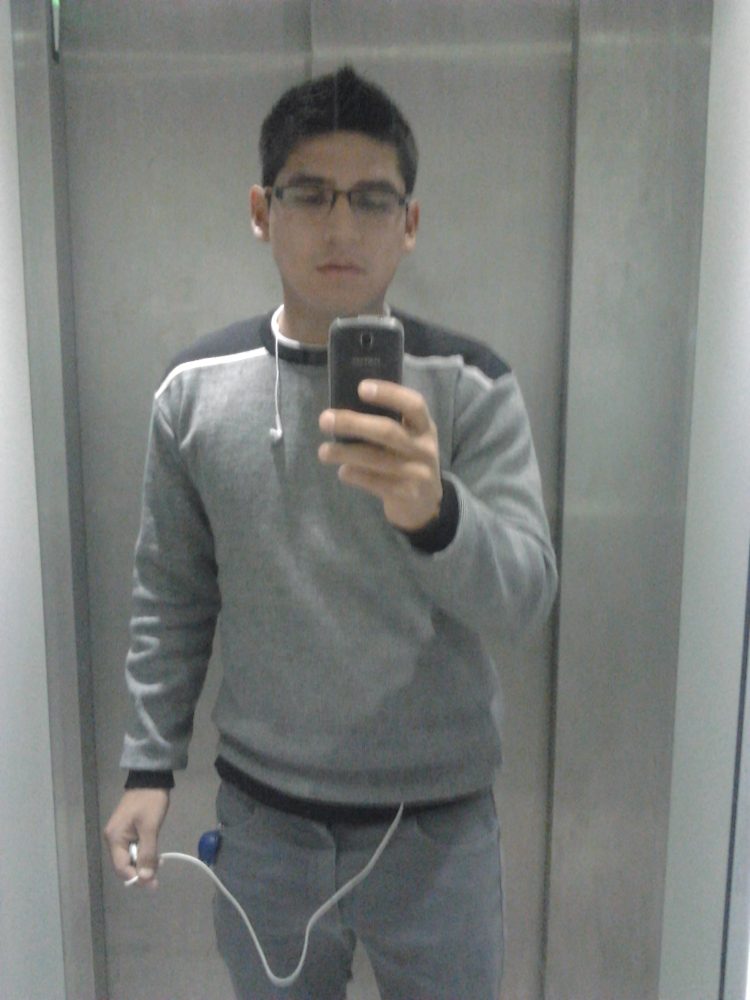

CV de Ronald Rodriguez
Funcional QA
llevo 10 años en como Funcional QA, Tester, Planificando pruebas de desarrollo, ya sea de caja blanca o negra.
Educación
- Ingeniería de Sistemas
- 2015-2020. Universidad César Vallejo
- Ingles
- 2012-2014

Experiencia Profesional
- Jhire Pharma
- 2013-2014. soporte técnico
- abc
- 2012-2014
Premios
- Reconocimiento a mejor trabajador
- 2013-2014
- Reconocimiento a la puntualidad
- 2012-2014
Otros
- una certificación qa
- Una maestría en TIC